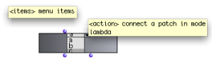
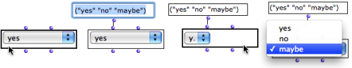
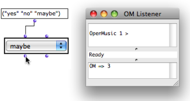
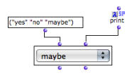

OpenMusic DocumentationHiérarchie de section : OM 6.6 User Manual > Visual Programming II > Interface Boxes > Pop-Up Menu Box
OpenMusic DocumentationHiérarchie de section : OM 6.6 User Manual > Visual Programming II > Interface Boxes > Pop-Up Menu Box
Navigation : page précédente | page suivante
Attention, votre navigateur ne supporte pas le javascript ou celui-ci à été désactivé. Certaines fonctionnalités de ce guide sont restreintes.
Selecting Items and Triggering Actions: Pop-Up Menu Box
The pop-up-menu box allows to
select items of a list in a pop-up menu interface
trigger a computation corresponding to a selected item.
To some extent, it resembles the items-list boxes.
Features
Inputs

|
The pop-up-menu box has two inputs :
|
Outputs
The two outputs are independent from the inputs :
the first output returns the index of the selected item.
the second output : returns the value of the selected item as a text.
Settings
Menu

To set the menu items, edit the first input, select the box and evaluate.
Selected Item Value
Click on the menu to select an item. When the box is evaluated :
The first output returns the number corresponding to the selected item. Note that the first menu item is equal to 0.
The second output returns the value of the selected item as text.

Locking the Menu
Mind locking the box before the evaluation : otherwize, the selected item might be reinitialized (by default to the first item in the list).
Uses
Tip : Selecting Files
Using a directory to initialize the menu contents.
|
The pop-up-menu box can be useful for selecting files in a folder. Connect a folder pathname to the first output of the pop up box : the menu items will stand for the files contained in the folder. The infile and outfile boxes are designed to return a directory pathname to the files contained in the |
{kind=link}
Triggering an Operation
The second input of the menu can be used for triggering an operation using the selected item as parameter. This input must be connected to a function or a box on "lambda" mode with one input or argument.
To set or modify the function associated with the menu, connect a box or function, then evaluate the box .
The lambda function is called when an item is selected. The index of this item is the number returned by the first output. It is the argument of the function. |

The value of the selected item – a number between 0 and 2 – is printed in the listener at selection.
|
A Musical Application : an Extended Example
Choosing and Listening to a Sound with a Pop-Up-Menu Box
Références :
Plan :
Navigation : page précédente | page suivante
A propos...(c) Ircam - Centre Pompidou